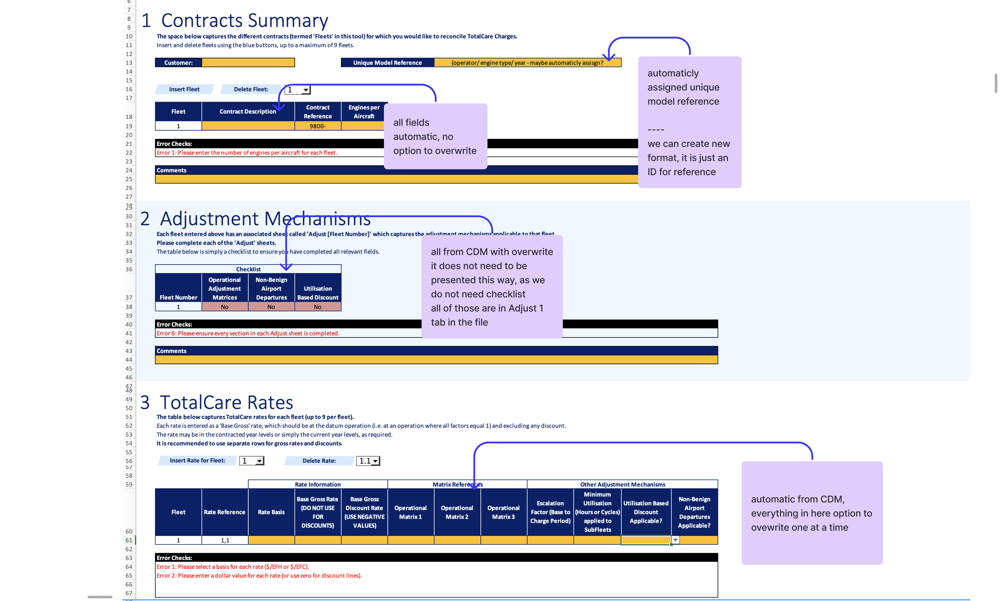
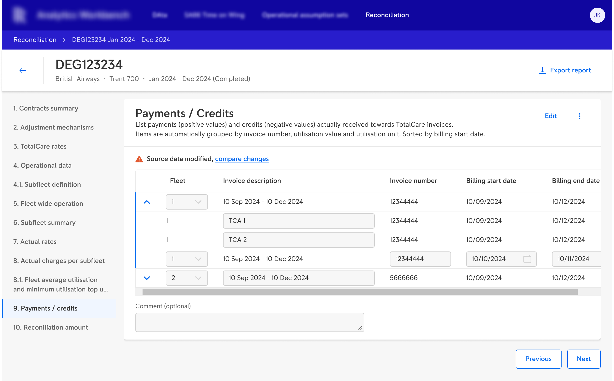
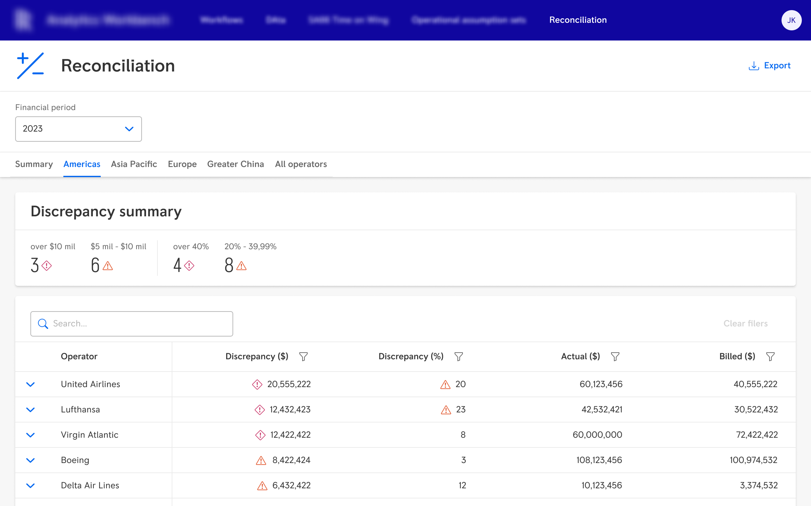
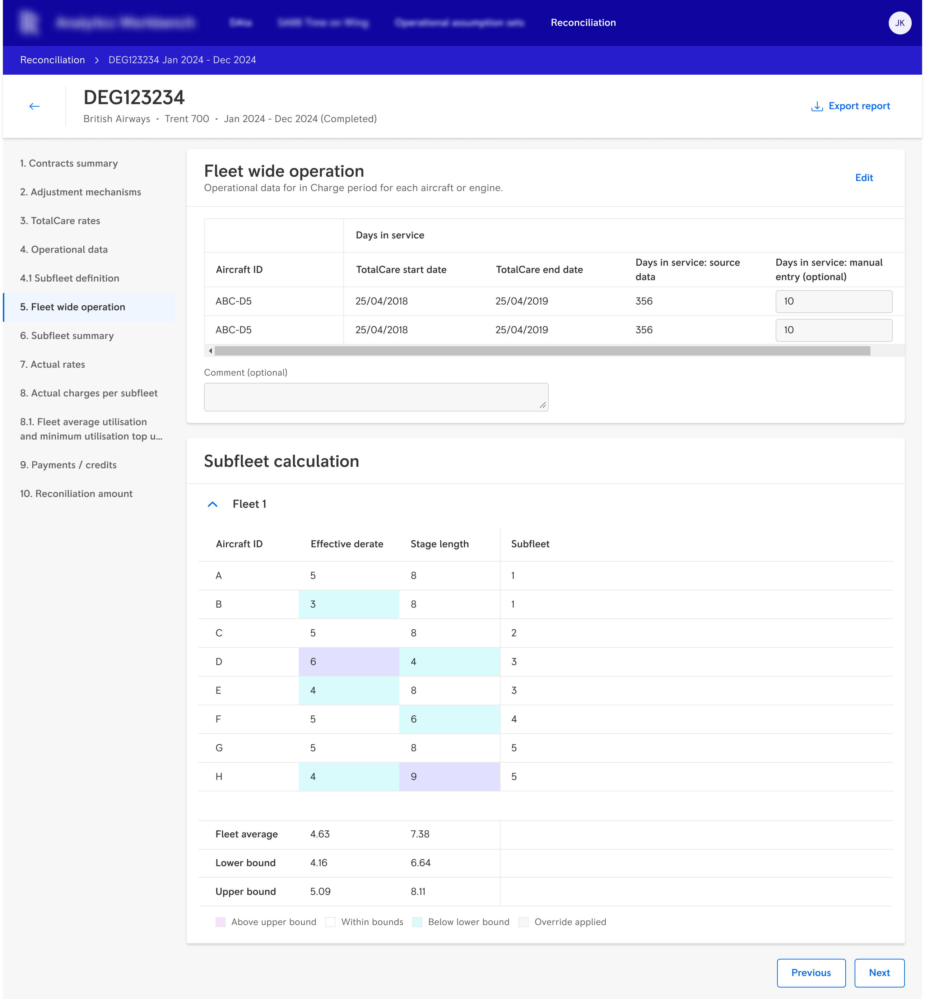
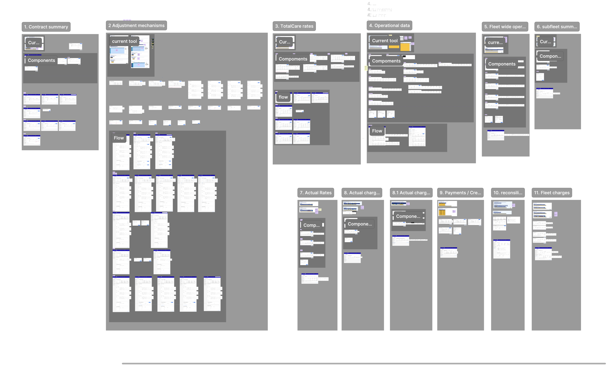

The situation
My client leases aircraft engines to airline operators. Operators don't pay a flat fee — they pay based on how the engine is actually used: flight distances, environmental conditions, load cycles. At the end of each billing period, the client's team collected flight data and calculated the final amount owed by each operator.
This process was called reconciliation. It lived entirely in a shared Excel spreadsheet. Completing it for all operators took approximately six months every billing cycle.

Reconciliation for all operators took approximately six months every billing cycle — six sheets, dozens of columns, maintained manually by a team of 20–30 specialists. By the time a problem was visible, it was usually too late to fix it cheaply.
The financial stakes were significant. If the gap between what an operator had contracted to pay and what they actually owed went undetected until the end of the period, the client could find itself owing operators millions of dollars — or operators could face unexpected debt they couldn't repay.
My role
I was the Product Designer on the project, working alongside a Product Owner with an aeronautical engineering background, business stakeholders, domain experts, and front-end and back-end development teams. I owned requirements gathering, wireframing, weekly feedback cycles with users and the PO, collaboration on design system consistency, developer handoff, and continued support through implementation and edge cases.
The project ran for approximately 1.5 years. I was there through deployment.
Process
The business decision was clear: no formal discovery phase. The brief was to digitise the existing Excel tool — take what was already there and give it a proper interface. I started there.
What made this project workable despite that constraint was the Product Owner. He had an aeronautical engineering background, which meant he understood the domain as well as the users did. Every new mockup went to him first. He was my first feedback layer — catching domain errors before they reached users, and helping me understand which contract variations mattered and which were edge cases. Weekly sessions with one or two reconciliation specialists followed. That rhythm — PO first, then users — replaced the discovery phase I didn't have.

Early sessions focused on how specialists worked with the existing Excel tool — which data could be pulled automatically, what counted as an invalid input, what they needed at each stage. The PO's domain knowledge meant I could move faster and ask better questions than I could have alone.
The initial assumption — shared by the business and, at the start, by me — was that a clean digital version of the spreadsheet would be sufficient. It became clear through feedback that this was wrong.
Each operator contract is highly customised. Specialists needed extensive ability to override, adjust, and annotate calculated values. The application couldn't just display data — it had to support a complex expert-driven editing workflow while keeping a full record of every change made, by whom, and why. Digitising the spreadsheet would have given specialists a faster way to do the same fragile manual process. That wasn't good enough.
This realisation extended the project significantly. It also led to the most consequential design decisions I made.
The original Excel tool was one long continuous sheet. Everyone — the PO, the users, the business — expected the digital version to follow the same structure. I proposed something different: a step-by-step architecture, where each screen represented one calculation phase whose output fed into the next.
This wasn't a UX preference. Reconciliation calculations are sequential — each step depends on the one before it. In a continuous scrollable view, a specialist could modify a value three steps back without understanding what it would break downstream. In a step-by-step structure, the dependencies are visible. Errors stay local. The consequence of each input is clear before the next step begins.
The PO pushed back. Users were sceptical — it was unfamiliar. I held the position, explained the reasoning, and showed them how the structure worked in practice through the wireframes. Once they could see it rather than just hear about it, the resistance faded.

Ten sequential steps, visible in the left-hand navigation. The architecture makes calculation dependencies explicit — specialists can see where they are in the process and what each step's output feeds into. This is what it looks like to design for consequence rather than familiarity.
Three further decisions came directly from the high-stakes context — none required the same fight, but all mattered.
All three decisions came from the same place: when errors cost millions, friction is a feature, not a failure.
The solution
The delivered portal consisted of two parts: a summary dashboard giving specialists an immediate overview of which operators have overpayments or underpayments, and a detailed ten-tab application showing the full calculation breakdown for each operator — with controlled editing, change tracking, and audit trail.

The summary dashboard gives specialists an immediate overview of which operators have overpayments or underpayments. A process that previously took six months to complete now updates continuously — giving the business time to renegotiate contracts before discrepancies become a crisis.


Step 5 (Fleet wide operation) and step 10 (Reconciliation amount) — two of the ten sequential tabs. Each covers a distinct calculation phase; the output of each feeds into the next. Editable fields look like inputs even in read-only mode, so specialists always know what they can change.

Eleven tabs, each covering a separate calculation phase — from contract summary to final reconciliation amount. Some tabs contain dozens of screens accounting for edge cases, custom contract variations, and error states. This is what it takes to replace a six-month manual process with something that specialists trust.
Outcome
For the roughly 20% of operators with standard contracts, reconciliation data that previously required days of manual work per operator is now generated automatically and updated monthly with no manual data entry.
For the remaining operators with complex customised contracts, the application significantly reduces manual effort — specialists no longer navigate between multiple systems copying data into Excel. The calculation logic is now reliable, shared, and auditable across the entire team.
Most importantly, the business now has real-time visibility into operator payment status throughout the billing period. Discrepancies that previously went undetected for up to six months can now be identified after a single quarter — giving the client time to renegotiate contracts before they result in multi-million dollar liabilities.
"Digitise what exists" is almost never the right brief in high-stakes domains. What exists is a coping mechanism. The real brief is always underneath it.